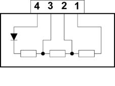

5040CC Check fan motor speed selector operation
- Path
- Test > 50 AUXILIARY UNITS > 5040 AIR CONDITIONING CASING AND COMPONENTS > 5040C air conditioner box and components > 5040CC Check fan motor speed selector operation
- Kind
- test / check procedure
- Applies to
- all engines; all production periods
- Interactive page
- https://sloeber94.github.io/elrnDB-fDbl/en/#/2585362
Applies to: all engines; all production periods
Basic operation
Use an ohmmeter to check the resistance values described below.
Thermal fuse cut-in temperature: 167 °C.

Applies to: all engines; all production periods
Measure a resistance of 3.55 10% ohm between terminals 1-4 (1st speed)
Measure a resistance of 1.35 10% ohm between terminals 2-4 (2nd speed)
Measure a resistance of 0.35 10% ohm between terminals 3-4 (3rd speed)